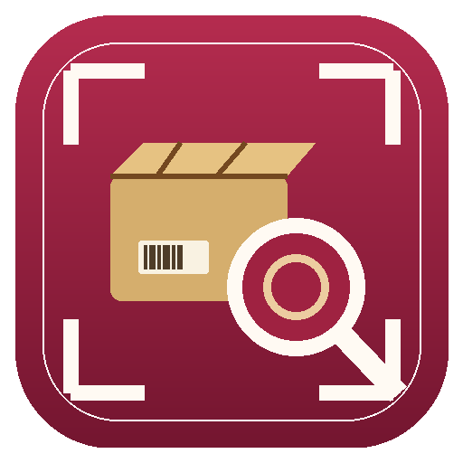

APLICACIÓN DE ACTIVO FIJO
Consulta Rápida
de Activo Fijo
APP v0.3 · INSTALADOR MULTIPLATAFORMA
Instala este acceso para abrir Consulta Rápida desde su propio icono, en modo aplicación y sin la barra normal de direcciones del navegador.
Verificando dispositivo y opciones de instalación…
Cómo instalar
Quitar y volver a instalar
Por seguridad, una página web no puede desinstalarse a sí misma. El retiro del icono o de la app debe confirmarse desde el navegador o desde el sistema operativo.
PASOS PARA ESTE DISPOSITIVOEste botón solo limpia el indicador local de instalación y vuelve a verificar el navegador. No desinstala aplicaciones por sí mismo.
Importante:
no uses una ventana de incógnito o privada para instalar.
Después de instalar, abre la aplicación desde el nuevo icono
Consulta AF.